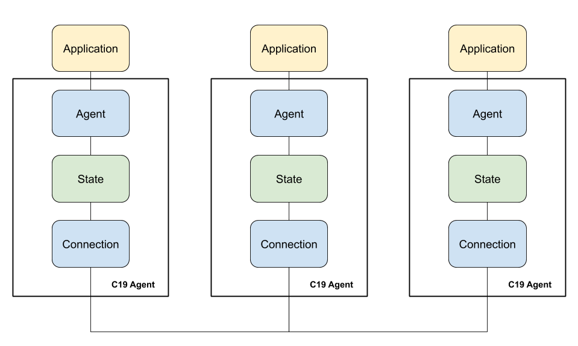

The C19 Protocol / Developer Guide
by Chen Fisher
Hello! and welcome to the C19 protocol developer guide. This book is for developers who wish to contribute to the C19 project. If you are a user of the C19 protocol and are not looking to develop for the project, please refer to the User Guide for details and how-to guides.
If you feel comfortable coding in Rust and would love to add capabilities to the C19 protocol, this book is for you.
Introduction
Hello again! We're excited to see you here and are hoping you have a productive journey in extending the C19 protocol.
This book will guide you through the steps for implementing the different layers of the C19 protocol and will show you the details and internals of the project so you could add capabilities that might be missing for you to complete your layer implementations.
It is imperative that you first read the [User Guide] and get yourself familiar with being a user of the C19 protocol. This book will repeat some of the information that is presented in the user guide, but it's not a good replacement for the knowledge you will gain by using and reading the user guide.
So let's begin! Enjoy and have a save journey :)
[User Guide]: [FIXME: link to user guide]
Concepts
The C19 protocol's main goal is to bring the data local to the application. To reduce the need for an application to handle fetching data. It does so by sharing state between different C19 agents.
The C19 agent is based on three layers: State, Agent and Connection. By using different combinations of different layer implementations, the user
can run the protocol in many different ways that will solve for most of their use cases. One the of the major strength of the C19 protocol is being a
single solution with different configurations to answer many use cases.
The State is where your data is being held. It allows the other layers to set and get values to and from the state.
The Agent is the entry-point to your application and where you communicate with the C19 agent. It exposes ways for your application
to communicate with the C19 agent, set and get values to and from the state.
The Connection is the low-level layer that is responsible for communicating with other C19 agents and exchange the state with them.
The next chapter will deep dive into the architecture of the project and will show you how everything is connected.
Architecture

As mentioned a few times on the [User Guide], the main components of a C19 agent are its three different layers, each is responsible for a specific task:
The Agent exposes ways for your application to set and get values to and from the state, the Connection layer is responsible for exchanging the state with
other peers and the State is responsible for holding the state itself.
A user of the C19 protocol has the option to choose any of the different layers to work together. For example, they might choose an Agent that exposes HTTP endpoints for setting and getting values or one that exposes a Websocket connection. The State layer might be one that is backed up by a DB (e.g Redis) or one that holds the state in its own data structure in-memory.
In this chapter we will explore the different layers in a bit more details and talk about the common parts that hold them together.
[User Guide]: [FIXME: link to user guide / architecture]
The State Layer
As mentioned, the state layer is responsible for holding and managing the data. It exposes ways for the Connection and Agent layers to set and get values to and from the state.
When implementing a State layer, one must conform to the State trait.
#![allow(unused)] fn main() { /// The State trait. /// /// Every state implementor must implement this trait. It is first auto-loaded by the configuration /// deserializer and then initialized by the library by calling the `init` function. The `init` /// function should return a [SafeState] which is then passed to the connection and agent layers. #[typetag::serde(tag = "kind")] pub trait State: std::fmt::Debug + Send + Sync + CloneState { /// Initializes the state and returns a state that is safe to be shared across threads. /// /// A state object is already loaded by the configuration. The implementor can use this /// function to add or initialize any other relevant data and then return a SafeState object /// which is shared with the connection and agent layers. fn init(&self) -> SafeState; /// Returns the version of the current state. /// /// An implementor can use this function to keep a version for each "state" of the sate. For /// example, the default state implementation sets this value to /// a random string whenever the state changes. It is then saves that version in a version history which /// allows for the connection layer to compute diff between two versions. fn version(&self) -> String; /// Sets a value to the state. /// /// There's no assumption about the value itself. It can be anything the implementor wishes. /// The default state implementation, for example, treats this value as a map of key/value /// pairs where the key is a String and the value conforms to a serde_json::Value value. fn set(&self, value: &dyn StateValue) -> Result<(), Box<dyn StdError>>; /// Gets the value associated with the specified key. /// /// To allow maximum flexibility, the key itself is a StateValue, which in effect means it can /// be anything desired by the implementor. fn get(&self, key: &dyn StateValue) -> Option<Box<dyn StateValue>>; /// Returns the value associated with the specified key or the default if the key was not found /// in the state. fn get_or(&self, key: &dyn StateValue, default: Box<dyn StateValue>) -> Box<dyn StateValue> { self.get(key).unwrap_or(default) } /// Returns the difference between this and the `other` state. fn diff(&self, other: &dyn StateValue) -> Result<Box<dyn StateValue>, Box<dyn StdError>>; /// Returns the whole state as a StateValue. /// /// This is helpful when the connection layer wishes to publish the whole state to its peers. fn get_root(&self) -> Option<Box<dyn StateValue>>; } }
As you can see from the code snippet of the State trait, a few functions must be implemented.
init - When the state layer is first being loaded by the framework, the init function is called and is expected to return a SafeState instance
of the state. A SafeState is just a typedef to the state wrapped in an Arc so it can be safely shared between the different layers. It is
up to the implementation to make sure the state is thread-safe.
The Default state layer implementation uses this function to initialize a few background threads.
version - The version function can be used by a Connection layer to optimize exchanging states with other peers. The Default connection
layer implementation does not publish a state that has already been published before. It also uses it when retrieving a state from other peers by
specifying the version it has. The Default state layer calculates the version by hashing the keys and timestamps for each key. Each implementation
should choose what's best for its use case. Imagine a Git state layer where the version is the HEAD.
set - This is the function used by the other layers to set values into the state. You can see that it accepts a StateValue. You will learn more
about the StateValue later on in this chapter, but for now it's important to note that the StateValue can represent any data structure. The connection
and agent layers do not know anything about the value. They just pass a vector of bytes to the state and it's up to the state to deserialize it to the proper
data structure.
The Default state assumes the StateValue is a JSON object with a key and a value that contains different fields (ttl, ts and the value itself).
get - This function is called by the other layers to get a value from the state. Same as the set function, it accepts a StateValue that should
represent something that the state knows how to deal with. The Default state assumes this is a string that represents the key to be retrieved.
get_or - Is a convenience function that allows to specify a default value if the key being retrieved does not exist.
diff - This function should calculate the diff between this state and the state that is specified as a parameter. The Default connection layer calls
this function when it wants to publish the changes since last publish time.
get_root - This function is called by other layers when they need the whole state. The Default connection layer uses it to get the full state to be exchanged
with other peers.
What to Consider
When implementing a State layer, we have to consider a few things:
How do we hold the data?
The data is being serialized and deserialized by the state layer. You must first decide what data structure will be used to represent the data.
The Default state layer holds the data as a HashMap that maps a String key to a Value. The Value is in itself a struct that holds information about
the value and the value itself which is a serde_json::Value object.
Or maybe the data should be held in a local DB like Redis or SQLite? You can then have your state get and set values to that DB instead of holding it yourself.
What do we expect from the Connection and Agent layers when they get and set values?
Since the user choose whatever combination of layers they want, the state layer cannot assume anything about the Agent and Connection layers. On the other
hand it has to expose ways for the agent and connection layers to get and set values to it. As you will learn in a following section, this is done by a struct that
implements the StateValue trait. A StateValue is something that can be serialized and deserialized to a byte vector.
The agent and connection layers pass values to and from the state by form of a byte vector. They do not assume anything about the meaning of this byte vector. It can be a JSON, binary data or any other structure. It is up to the state layer to decide what it should be.
What other properties of the data we implement?
Except for the value itself that is set by the user, a state layer can decide on other features to be included with a value. The Default state layer, for example, allows
setting a TTL for keys.
How should conflicts be resolved?
Since the C19 protocol is a distributed system, one must consider a case where a C19 agent is being updated by two other peers in parallel, each one setting the same key. One value might be older than the other. It is up to the state layer to resolve the conflict.
Imagine a case where C19 agent A is holding a key k with a certain value. Another C19 agent B is holding the same key but with an updated value that C19 agent A wasn't yet updated to.
If they both update a C19 agent C then agent C would have to resolve the conflict of which value for key k it should hold.
The Default state layer resolves conflicts by considering a timestamp for each key when it was first created. It will always choose the value that has the most recent timestamp.
Thread safety
The state is being passed around the layers which operates concurrently using different threads and futures. When implementing a State layer, you should make sure your data is
being protected from concurrent access. Put in other words, your state is a shared resource.
Performance
The connection and agent layers trust the state layer to be performant when setting and getting values. If the state layer is slow to respond it might affect the agent when replying to
the application or the connection layer when exchanging data with other peers. You should be mindful of the performance when you make decisions on implementation. The Default state layer
uses async set operations to make sure it doesn't block readers of the state. This way when the connection layer is setting a full state it got from another peer, the get operations performed
by the agent layer will not be blocked.
The Default state holds the data in a HashMap which is behind a RwLock.
Supporting Data Seeders
Data seeders are a way to seed data into a C19 agent when it first loads. You will learn more about data seeders in a following chapter. It is recommended for a state layer to support data seeders.
The Default state layer loads a data seeder when it first initializes.
The State Value
Before we can continue to talk about the different layers, we have to talk about the StateValue.
As mentioned, the StateValue is how the different layers talk to each other. If the Agent, Connection and State
cannot assume anything about one another, how can they share the data between them?
The StateValue is a trait that requires a single function to serialize the data into a byte vector.
It is up to the state layer to determine how the data should be treated. The agent and connection layers are merely responsible
for transferring the data as-is from the consumer to the state.
#![allow(unused)] fn main() { pub trait StateValue: Send + Sync { fn as_bytes(&self) -> Option<Vec<u8>>; } }
As you can see, the implementer of a StateValue must implement the as_bytes function that serializes the value into a u8 vector.
Here's how the Default state layer implements the StateValue trait:
#![allow(unused)] fn main() { impl StateValue for Value { fn as_bytes(&self) -> Option<Vec<u8>> { serde_json::to_vec(self).ok() } } }
As you will learn when we walk through the Default state layer implementation, the Value is a struct that holds a single value in the state.
The value is JSON compatible so the Default state uses the serde_json crate to serialize the value into a u8 vector.
When deserializing a u8 vector into a Value struct, the Default state layer assumes the u8 vector represents a valid JSON data. It's up to
the user to make sure they conform to the state requirements.
The Agent Layer
The agent layer is the entry point of the application to get and set values to the state. It should expose ways for the application to do that.
The Default agent layer exposes two HTTP endpoints for setting and getting values.
We will learn more about the Default agent layer when we walk through the Default layer implementations.
#![allow(unused)] fn main() { pub trait Agent: std::fmt::Debug + Send + Sync { fn start<'a>( &'a self, state: state::SafeState, ) -> BoxFuture<'a, Result<(), Box<dyn StdError + Send + Sync>>>; } }
The Agent trait requires implementation of a single function: start to allow the agent layer to initialize different threads or futures.
The Default agent initializes the HTTP server at this point.
As you can see in the start function signature, it accepts a state instance. This allows the agent layer to communicate with the state.
What to Consider When Implementing an Agent Layer
The point of interaction for the Agent layer is the state on one side and the application on the other side. There's nothing much expected from the agent layer when it comes to setting and getting values to the state, but much is expected when talking to the application.
Performance
The agent layer should be performant when it responds to the application. It is dependent on the state layer for its performance but can and should still do what it can do respond in a timely manner to the application.
API
There's no hard constraint when it comes to the API that is exposed to the application. It's up to you to decide what you wish to expose to the application.
The Default agent layer exposes HTTP endpoints to get and set values. One might implement a persistent connection (WebSocket for example) or add options for the
application to be notified immediately when there's a change to the state.
The Connection Layer
The connection layer is the low-level layer that is responsible for exchanging the state with other C19 peers. This is usually the layer that is doing most of the work. One has to consider different use cases and what should be optimized. For example, if the use case is for big data, then maybe it's not a good idea to exchange the full state on every change.
The Default connection layer publishes only the changes and does so at a specified interval. It also runs a thread to retrieve the full state
from other peers, given that it holds a different version of the state than the connected peer. This should balance the size of the data with the
rate of publishing changes.
#![allow(unused)] fn main() { pub trait Connection: std::fmt::Debug + Send + Sync { fn start<'a>( &'a self, state: state::SafeState, ) -> BoxFuture<'a, Result<(), Box<dyn StdError + Send + Sync>>>; } }
Similar to the Agent trait, the connection trait requires one method: start which accepts the state instance.
The Default connection layer initializes the publisher and receiver threads in this function.
What to Consider When Implementing a Connection Layer
The connection layer is usually the most involved layer to implement. It must consider how the state should be exchanged. At what rate, which peers to choose, what type of protocol to use when exchanging the state, etc... It is better first to decide and focus on the use case you are trying to solve.
Choosing Peers
The way the connection layer chooses peers to exchange the state with affects how the data is propagated throughout the system.
The connection to other peers can be a persistent connection or a stateless connection. The peers chosen can be at random or using a specific formula.
The Default connection layer chooses peers at random, uses HTTP calls to exchange the state with and disconnects. It does so at a specified interval.
Protocol
When connecting to other peers the state should be exchanged. There are many ways to exchange the data. Depending on the use case you wish to solve, you might want to exchange only the changes since last exchange, or maybe to negotiate a version to be exchanged or maybe just the full state.
The Default connection layer publishes the changes at a specified interval and pulls the full state at a different interval. When pulling the full state it specifies the
current version it has and if it matches the one that the peer holds then nothing is exchanged.
Rate
Should the connection layer exchange the state on every change in state? Or maybe at a certain interval? If the state changes often and the connection layer exchanges the state on every change then you gain an immediate representation of the state across the system but at the expense of resources. Publishing too slow will extend the time the system is unbalanced in terms of the shared state across the system.
The Default connection layer publishes the state at a specified, configurable interval. This decoupling of exchanging the state with the change of state allows the state
to be changed at any rate without affecting the resources for exchanging it.
Supporting Peer Providers
Peer providers allow a connection layer to query for available peers to choose from. A connection layer implementation might choose a different way to get the list of available peers, but it's recommended to support peer providers since it allows for greater extensibility. By decoupling the logic of listing available peers from exchanging data, the user will have more options to choose from.
The Default connection layer uses a peer provider to get the list of available peers and then chooses a few at random.
You will learn more about peer providers in a following section.
Configuration
When the main function runs, the first thing it does is to load the configuration.
The configuration is a YAML file with a main part and a section for each of the layers.
version: 0.1
spec:
agent:
kind: Default
port: 3097
state:
kind: Default
ttl: null
purge_interval: 60000
connection:
kind: Default
port: 4097
push_interval: 1000
pull_interval: 60000
r0: 3
timeout: 1000
peer_provider:
kind: K8s
selector:
c19: getting-started
namespace: default
The Config class dynamically initializes each section using serde_yaml and returns a configuration object which holds each section. The kind
field for every section tells serde which layer to load.
When the run function of the project is called, all three layers are initialized with this configuration and then started.
When implementing one of the layers, your struct might look like this:
#![allow(unused)] fn main() { /// The default state struct. #[derive(Serialize, Deserialize, Debug, Clone)] #[serde(default)] pub struct Default { /// The default TTL (in milliseconds) to use if none is specified when setting a new value. ttl: Option<u64>, /// The interval in milliseconds in which to purge expired values. /// /// Default value is 1 minute (60000 milliseconds). /// [FIXME: use Duration instead of explicit milliseconds] purge_interval: u64, /// The DataSeeder to use for seeding the data on initialization. /// /// See more about DataSeeders here [FIXME: link to data seeders] data_seeder: Option<Arc<RwLock<Box<dyn DataSeeder>>>>, /// The version of the current state. /// /// This is set to a random unique string on every state change. #[serde(skip_serializing, skip_deserializing)] version: Arc<RwLock<String>>, /// The SyncSender channel to use for async set operations /// /// When a set operation is being commited to the state, the state /// will pass the operation to an async handler which will then commit the /// changes to the state. #[serde(skip_serializing, skip_deserializing)] tx: Option<mpsc::SyncSender<Vec<u8>>>, /// The data storage in the form of a Key/Value hashmap. #[serde(skip_serializing, skip_deserializing)] storage: Arc<RwLock<HashMap<String, Box<Value>>>>, /// Calculating the version is a bit expensive so we use /// the dirty flag to lazily calculate the verison on-demand. #[serde(skip_serializing, skip_deserializing)] is_dirty: Arc<RwLock<bool>>, } }
If we compare this to how the Default state configuration looks like:
state:
kind: Default
ttl: null
purge_interval: 60000
The ttl, purge_interval and data_seeder fields are loaded but all other fields are skipped. This is because only the ttl, purge_interval and data_seeder
should be configurable while the other members of the struct are for internal use. You can mark members to be skipped with serde's skip annotations.
Peer Providers
When a connection layer needs to select peers to connect to it can use a Peer Provider to get the full list of available peers to choose from.
The Default connection layer is using a peer provider to get the full list of available peers.
The StaticPeerProvider
The StaticPeerProvider is a simple peer provider that allows to statically (manually) configure the list of available peers. This is useful mainly
for development and testing your work locally.
peer_provider:
kind: Static
peers:
- 192.168.1.2
- 192.168.1.3:3000
The static peer provider allows setting a fixed, predefined list of peers. You can configure it to include as many peers as you wish and can also include a different port for each peer.
It is up to the connection layer to resolve the port to use when connecting to other peers. The Default connection layer uses the target_port and
the port configuration fields as a fallback if a specific port is not defined in the list of available peers.
The K8s peer provider does not even return a port. It only lists the pod IP addresses.
We will look at the StaticPeerProvider implementation in detail when we walk through the Default layer implementations.
The PeerProvider Trait
#![allow(unused)] fn main() { pub trait PeerProvider: std::fmt::Debug + Send + Sync { /// Initializes the peer provider. fn init(&self) -> Result<(), Box<dyn StdError + Send + Sync>>; /// Returns a vector of available peers. fn get(&self) -> Vec<Peer>; } }
The peer provider is first initialized by the framework. It must expose a get function that is expected to return the list of available peers the connection
layer should choose from.
Data Seeders
When a C19 agent first launches and joins a C19 cluster, it is expected from the connection layer to connect and exchange the state with other, already running agents. This allows a new C19 agent to sync with other peers as it launches.
Nonetheless there are cases where a user would want to initialize the agent with some data. For that we have data seeders.
Depending on the State layer implementation, when it first loads it is expected to initialize and load a data seeder. If you choose to implement a State layer,
please consider supporting the DataSeeder API so users will have a consistent option to seed your state with data.
The File Data Seeder
The File data seeder will load data from a file. The data in the file must be compatible with the State layer and it's up to the user to make sure it does.
The Default state layer expects the following format:
{
"cat": {
"value": "garfield",
"ttl": 3600000
},
"dog": {
"value": "snoopy"
}
}
When the Default state layer is being initialized it loads the data seeder, if one is configured:
#![allow(unused)] fn main() { fn init(&self) -> state::SafeState { ... // if we have a data seeder then use it to seed the data this.data_seeder.clone().and_then(|data_seeder| { if let Err(e) = this.seed(data_seeder) { warn!("Failed to seed data; ({})", e); } Some(()) }); ... } }
The DataSeeder Trait
#![allow(unused)] fn main() { pub trait DataSeeder: std::fmt::Debug + Send + Sync { fn load(&self) -> Result<Box<dyn StateValue>, Box<dyn StdError>>; } }
A very simple trait with a load function that returns a StateValue.
We will explore the implementation of the File data seeder in detail when we walk through the Defaul layer implementations.
Walk-through of the Default Layers
In the following chapter we will walk through the implementation of the Default layers and explore how the StaticPeerProvider and File data seeder
look like.
By the end of this chapter you should be able to implement your own layers.
The Default State
In this section we will walk through the implementation of the Default state layer. By the end of this chapter you should be able to implement
your own state layer.
Behavior
Before diving into the code, let's first try to describe the state behavior.
The Store
The Default state layer holds a HashMap of String keys to Values.
A value is a structure that holds an optional TTL, a timestamp and the value itself which is a serde_json::Value.
When the state layer receives a StateValue to be set, it will deserialize it into a HashMap and will merge it into its own HashMap.
Put in other words, the Default state layer expects the value to be a JSON object with an optional TTL, a timestamp and a value which can be
anything JSON compatible.
Resolving Conflicts
To resolve conflicts in case two different peers hold different versions of the same key, the state layer uses a timestamp. The timestamp is set when a key is being committed to the state. This means that a newer timestamp will always "win" the conflict.
The Code
Let's explore the code.
The Default struct
This struct holds the configuration of the state and implements the State trait.
#![allow(unused)] fn main() { pub struct Default { /// The default TTL (in milliseconds) to use if none is specified when setting a new value. ttl: Option<u64>, /// The interval in milliseconds in which to purge expired values. /// /// Default value is 1 minute (60000 milliseconds). purge_interval: u64, /// The DataSeeder to use for seeding the data on initialization. data_seeder: Option<Arc<RwLock<Box<dyn DataSeeder>>>>, /// The version of the current state. /// /// This is set to a random unique string on every state change. #[serde(skip_serializing, skip_deserializing)] version: Arc<RwLock<String>>, /// The SyncSender channel to use for async set operations /// /// When a set operation is being commited to the state, the state /// will pass the operation to an async handler which will then commit the /// changes to the state. #[serde(skip_serializing, skip_deserializing)] tx: Option<mpsc::SyncSender<Vec<u8>>>, /// The data storage in the form of a Key/Value hashmap. #[serde(skip_serializing, skip_deserializing)] storage: Arc<RwLock<HashMap<String, Box<Value>>>>, /// Calculating the version is a bit expensive so we use /// the dirty flag to lazily calculate the verison on-demand. #[serde(skip_serializing, skip_deserializing)] is_dirty: Arc<RwLock<bool>>, } }
ttl - The Default state layer offers an option to set a default TTL value for keys that do not specify an explicit TTL.
purge_interval - The state will never return expired keys but will hold them in memory until purged at a certain interval for the sake of performance.
data_seeder - The state supports data seeders and will load the data when it first initializes.
version - The state calculates the state version by combining (xor) the hash of all the keys and their respective timestamps. Note that the version is
behind a lock to conform to the thread-safety requirement.
tx - Setting a large value to the state might be CPU intensive operation. The state will do this in the background on a dedicated thread. This field
is used for writing new set operations.
storage - The HashMap to hold the data. Note that the HashMap is behind a lock since we have to make sure our state is thread-safe.
is_dirty - For performance reasons, the state will use this flag to do some operations in a lazy manner. Calculating the state version, for example, is a costly
operation. We want to calculate the version only on-demand and when the data has changed.
As you will learn in a following chapter, a few of the fields above are loaded by the configuration component of the C19 agent. Specifically, the ttl, purge_interval and the data_seeder are configured by the user.
The Value
The Value struct describes the values that we hold in our state.
#![allow(unused)] fn main() { struct Value { /// A serde_json::Value to hold any value that can be serialized into JSON format. value: serde_json::Value, /// The timestamp when this value was first created. #[serde(default = "epoch")] ts: u64, /// An optional TTL (resolved to an absolute epoch time) when this value will be expired. ttl: Option<u64>, } }
value - A serde_json::Value to hold the value itself.
ts - A timestamp representing the time when the key was first created.
ttl - An optional TTL for this value.
Implementing the State Trait
Let's explore a few of the more interesting functions of the State trait.
Init
To conform to the State trait we first have to implement the init function.
#![allow(unused)] fn main() { fn init(&self) -> SafeState; }
The init function is expected to return a SafeState which is a type definition of an Arc.
#![allow(unused)] fn main() { fn init(&self) -> state::SafeState { let mut this = self.clone(); // if we have a data seeder then use it to seed the data this.data_seeder.clone().and_then(|data_seeder| { info!("Seeding data..."); if let Err(e) = this.seed(data_seeder) { warn!("Failed to seed data; ({})", e); } Some(()) }); // start the async_set consumer thread let (tx, rx) = mpsc::sync_channel(MAX_SET_OPS); this.tx = Some(tx); let this = Arc::new(this); let t = this.clone(); tokio::task::spawn_blocking(move || {async_set(t, rx)}); // start the purger thread tokio::spawn(purge(this.clone())); this } }
The Default state first loads a data seeder, if one is provided, and the goes on to initialize some internal threads. One of async set operations and one for purging expired
values.
In the end it returns an Arc::new that wraps self.
Get
#![allow(unused)] fn main() { fn get(&self, key: &dyn StateValue) -> Option<Box<dyn StateValue>> { let key: String = String::from_utf8(key.as_bytes().unwrap_or(Vec::new())).unwrap(); let storage = self.storage.read().unwrap().clone(); storage .get(&key) .cloned() .filter(|v| !v.is_expired()) .map(|v| v.into()) } }
The state first deserialize the key to a String. It is up to the caller to make sure the key is a StateValue that represents a String.
Then, the state unlocks the storage for reading (recall that the storage is behind a read lock) looks up the key and filters it out if it has expired.
Set
#![allow(unused)] fn main() { fn set(&self, map: &HashMap<String, Box<Value>>) { let map = map.clone(); let mut is_dirty = false; // merge the maps let mut storage = self.storage.write().unwrap(); for (key, mut right) in map { if right.is_expired() { continue; } if self.ttl.is_some() && right.ttl.is_none() { right.ttl = self.ttl; } storage.entry(key) .and_modify(|v| { if v.ts < right.ts { *v = right.clone().into(); is_dirty = true; }}) .or_insert({ is_dirty = true; right.into() }); } *self.is_dirty.write().unwrap() = is_dirty; } }
The Default state layer implements async set operations by running a dedicated thread that consumes a channel. The set function above is called by the async set
operation after it has deserialized the StateValue into a HashMap to make the actual set.
Here, the state merges the maps while marking the state as dirty. It does so to allow lazy operations to be performed only if the state has changed.
Implementing the StateValue
To implement a StateValue we have to implement a deserialization function that will deserialize our value into a vector of u8.
StateValue Trait
#![allow(unused)] fn main() { pub trait StateValue: Send + Sync { fn as_bytes(&self) -> Option<Vec<u8>>; } }
Value implementing the StateValue Trait
#![allow(unused)] fn main() { impl StateValue for Value { fn as_bytes(&self) -> Option<Vec<u8>> { serde_json::to_vec(self).ok() } } }
This way the connection and agent layers can pass a StateValue around without needing to know anything about it.
The Default Agent
The Default agent layer implementation allows an application to get and set values to the state through HTTP calls.
It exposes two endpoints: GET and PUT and does not assume anything about the payload itself. It is up to the application (user)
to make sure the payload conforms to the chosen State layer.
Any Agent implementation should choose its own way of exposing ways to get and set values to the state.
Behavior
The behavior of the Default agent is straight forward. It runs a HTTP server with two handlers for getting and setting values.
#![allow(unused)] fn main() { async fn handler(state: state::SafeState, req: Request<Body>) -> Result<Response<Body>> { Ok(match req.method() { &Method::GET => get_handler(state, &req), &Method::PUT => set_handler(state, req).await.unwrap(), _ => Responses::not_found(None), }) } impl Default { async fn server(&self, state: state::SafeState) -> Result<()> { let service = make_service_fn(move |_| { let state = state.clone(); async move { Ok::<_, Box<dyn StdError + Send + Sync>>(service_fn(move |req| { handler(state.clone(), req) })) } }); let server = Server::try_bind(&([0, 0, 0, 0], self.port).into())?; server.serve(service).await?; Ok(()) } } }
The Agent Trait
#![allow(unused)] fn main() { pub trait Agent: std::fmt::Debug + Send + Sync { fn start<'a>( &'a self, state: state::SafeState, ) -> BoxFuture<'a, Result<(), Box<dyn StdError + Send + Sync>>>; } }
The Default agent layer uses the start function to initialize and run the HTTP server.
#![allow(unused)] fn main() { fn start<'a>(&'a self, state: state::SafeState) -> BoxFuture<'a, Result<()>> { self.server(state).map_err(|e| e.into()).boxed() } }
The Default Connection
The connection layer is responsible for exchanging the state with other peers. As mentioned before, this is probably the more involved layer to implement. It is involved because one has to decide how the state should be exchanged and there are usually trade-offs to make. Exchanging to fast will be resource intensive, while exchanging to slow will extend the imbalance of the shared state.
Behavior
The Default connection layer uses two threads to exchange the state with other peers: The publisher and receiver threads.
The publisher thread publishes the only the changes made since the last publish time.
The receiver thread will connect and pull the full state from a peer if they both hold a different version of the state.
Apart from the two threads for exchanging the state, the connection layer runs a HTTP server to allow other peers to connect and exchange the state with it.
It exposes two endpoints: one for retrieving the state if the other for setting the state.
Get
#![allow(unused)] fn main() { fn get_handler(state: state::SafeState, req: &Request<Body>) -> Response<Body> { let versions_match = req.uri().path().split('/').last().and_then(|version| { trace!("get_handler / version {} ({})", version, state.version()); (version.is_empty() || version != state.version()).into() }).unwrap(); if versions_match { Responses::ok(state.get_root().unwrap().into()) } else { Responses::no_content() } } }
Here, the Default connection layer compares the version it holds against the version reported by the connected peer. If the versions do not match then
it will return the full state. Otherwise nothing will be returned.
Set
#![allow(unused)] fn main() { fn set_handler<'a>( state: state::SafeState, req: Request<Body>, ) -> impl FutureExt<Output = Result<Response<Body>>> + 'a { hyper::body::to_bytes(req.into_body()) .and_then(move |body| async move { let body = &body as &dyn state::StateValue; let result = state.set(body); Ok(match result { Ok(_) => Responses::no_content(), _ => Responses::unprocessable(None), }) }) .map_err(|e| e.into()) } }
The Default connection layer exposes this function to allow other peers to publish their state. It will accept the state and set it to the State layer.
The Receiver Thread
The receiver thread connects to other peers and sends a HTTP GET request while specifying the version it holds.
It uses a peer provider to get the full list of available peers and randomly chooses a few of them.
It them loops through the responses and sets them to the state.
#![allow(unused)] fn main() { async fn receiver(&self, state: state::SafeState) -> Result<()> { loop { // sample r0 peers let peers = self.peer_provider.get(); let peers = peers.into_iter().sample(self.r0); let res = stream::iter(peers) .map(|peer| { let url = format!("http://{}:{}/{}", peer.ip(), peer.port().unwrap_or(self.target_port.unwrap_or(self.port)), state.version()); let timeout = self.timeout; tokio::spawn(async move { trace!("Retreiving from {}", url); let client = Client::builder() .connect_timeout(Duration::from_millis(timeout)) .build().unwrap(); let result = client .get(&url.to_string()) .send() .await? .bytes() .await; result }) }) .buffer_unordered(4); res.collect::<Vec<_>>().await.iter().for_each(|result| { if let Ok(Ok(result)) = result { if let Err(e) = state.set(result as &dyn state::StateValue) { warn!("Failed to set peer response to state; {}", e); } } }); time::delay_for(time::Duration::from_millis(self.pull_interval)).await; } } }
The Publisher Thread
The publisher thread connects to other peers and publishes the changes since last publish time.
#![allow(unused)] fn main() { async fn publisher(&self, state: state::SafeState) -> Result<()> { let mut last_published: Vec<u8> = Vec::<u8>::default(); let mut last_published_version = String::default(); loop { if last_published_version == state.version() { time::delay_for(time::Duration::from_millis(self.push_interval)).await; continue; } let last = last_published.clone(); let state_clone = state.clone(); let res = tokio::task::spawn_blocking(move || { // get the recent state let root = state_clone.get_root().unwrap().as_bytes().unwrap(); if root == last { return None; } let state_to_publish = state_clone.diff(&last).and_then(|diff| { Ok(diff.as_bytes().unwrap()) }).or::<Vec<u8>>(Ok(root.clone())).unwrap(); Some((state_to_publish, root)) }).await?; if res.is_none() { time::delay_for(time::Duration::from_millis(self.push_interval)).await; continue; } let (state_to_publish, last) = res.unwrap(); last_published = last; last_published_version = state.version(); // sample r0 peers let peers = self.peer_provider.get(); let peers = peers.into_iter().sample(self.r0); // start sending to peers in parallel let res = stream::iter(peers) .map(|peer| { let state_to_publish = state_to_publish.clone(); let url = format!("http://{}:{}/", peer.ip(), peer.port().unwrap_or(self.target_port.unwrap_or(self.port))); let timeout = self.timeout; tokio::spawn(async move { trace!("Sending to {}", url); let client = Client::builder() .connect_timeout(Duration::from_millis(timeout)) .build().unwrap(); let result = client .put(&url.to_string()) .body(state_to_publish) .send() .await? .bytes() .await; result }) }) .buffer_unordered(4); res.collect::<Vec<_>>().await.iter().for_each(|result| { if let Ok(Ok(result)) = result { if let Err(e) = state.set(result as &dyn state::StateValue) { warn!("Failed to set peer response to state; {}", e); } } }); time::delay_for(time::Duration::from_millis(self.push_interval)).await; } } }
[FIXME: no need for the publish state to set the responses to the state since all responses are expected to be no-content]
The StaticPeerProvider
A peer provider is responsible for returning a list of available peers for the connection layer to choose from.
The static peer provider allows configuring a predefined, static list of peer endpoints.
The Peer Provider Trait
#![allow(unused)] fn main() { pub trait PeerProvider: std::fmt::Debug + Send + Sync { /// Initializes the peer provider. fn init(&self) -> Result<(), Box<dyn StdError + Send + Sync>>; /// Returns a vector of available peers. fn get(&self) -> Vec<Peer>; } }
As seen in the architecture chapter, the PeerProvider trait requires a peer provider to implement a get function that returns a vector of peers.
A peer is defined as follows:
#![allow(unused)] fn main() { pub enum Peer { Ipv4Addr(Ipv4Addr), SocketAddrV4(SocketAddrV4), } }
A peer is an enum with either an Ipv4 or a full socket address. The reason behind this is to allow a peer provider to return a vector of ip address or ip:port.
The Static Peer Provider
#![allow(unused)] fn main() { #[derive(Serialize, Deserialize, Debug)] pub struct Static { peers: Vec<Peer>, } #[typetag::serde] impl PeerProvider for Static { fn init(&self) -> Result<()> { Ok(()) } fn get(&self) -> Vec<Peer> { self.peers.clone() } } }
The Static struct is loaded by the configuration module and is expecting a vector of ip or ip:port values.
peer_provider:
kind: Static
peers:
- 192.168.1.2
- 192.168.1.3:3000
The get function implementation just returns that list.
Feel free to browse the K8s peer provider code to see a more complex implementation for a peer provider.
The File DataSeeder
A data seeder is responsible for seeding data into a state once loaded.
The File data seeder loads the content of a file and set it to the state. It is agnostic to the format of the file. It is up to the user
to make sure the format of the file complies to the State requirements.
The Default state, for example, requires the data to be of a certain JSON format:
{
"cat": {
"value": "garfield",
"ttl": 3600000
},
"dog": {
"value": "snoopy"
}
}
The DataSeeder Trait
#![allow(unused)] fn main() { pub trait DataSeeder: std::fmt::Debug + Send + Sync { fn load(&self) -> Result<Box<dyn StateValue>, Box<dyn StdError>>; } }
We are required to implement the load function and return anything that implements the StateValue trait. If you recall, the StateValue trait
requires us to implement a function that deserializes our value into a u8 vector.
#![allow(unused)] fn main() { pub trait StateValue: Send + Sync { fn as_bytes(&self) -> Option<Vec<u8>>; } }
The File DataSeeder
#![allow(unused)] fn main() { #[derive(Serialize, Deserialize, Debug)] pub struct File { filename: String, } #[typetag::serde] impl data_seeder::DataSeeder for File { fn load(&self) -> Result<Box<dyn StateValue>> { let data: Box<dyn StateValue> = Box::new(fs::read(&self.filename)?); Ok(data) } } }
The File data seeder expects a filename to be specified in its configuration. When the load function is called it will read the file and return the data,
which complies with the StateValue trait.
Ideas for Extending the C19 protocol
There are many ways to extend the C19 protocol. As you've learned from both the user guide and the developer guide, the power of the C19 protocol lies withing it's layers and the many ways to configure and combine different layers together.
The more layers implemented, the more powerful the project will be and any user will be able to find the configuration to answer their use case.
In this section we describe a few ideas for extending the different layers. Hopefully you will find this useful and decide on implementing a layer of your own.
Git State
Since C19 is a distributed system, there might be a situation where a value is being set to the state concurrently from different sources.
A State must resolve conflicts and decide which value to take if the values are conflicting.
Imagine a case where two C19 agents hold a different version of a value. One has been updated while the other has not yet. Now imagine a third agent exchanging data with those two agents. It will get the value from both of them and will have to decide which value to commit.
The Default state implementation resolve conflicts by using a simple timestamp. The timestamp is set when a value is first created at the source.
Git has its own way of resolving conflicts and it might be a good candidate for a C19 state.
State
The State can set and get values by using git commit operations and conflicts can be automatically resolved. If a conflict cannot be automatically resolved
there's an option to prefer "theirs" or "ours" (See here for Git documentation of the pull command)
Connection
The Connection layer would have to support a Git protocol.
Agent
The Agent can probably be any agent without specific need for a Git knowledge. The Default agent implementation offers a way to get and set values to the state
and it doesn't need to know anything about the fact that the keys are stored as Git repositories.
A Git specific agent can be implemented to allow Git specific commands to be sent from an application or to allow commit of files and not only keys and values.
Query Paradigm
One of the benefits of the C19 protocol is the fact that it brings the data locally to the application. But if the data is too large to be exchanged in full then different solutions might come handy. One of the options is the Query Paradigm.
We call it the Query Paradigm since it's a paradigm change from how the Default layers are implemented today. The Query Paradigm works like this:
When an application queries its local C19 agent, if the C19 agent doesn't have this data available it will send a query to a set of other C19 agents. Those agents will query other C19 agents if they don't hold the data themselves and will eventually return a results. The result can be cached to the local C19 agent and therefore create an on-demand data distribution where each C19 agent holds the data that is required by the application.
The rate in which a query propagates throughout the system can vary depending on a number of different parameters. For example, how many C19 agents are being queried on each cycle.
The Layers
There are different ways to go about implementing this, but it seems like any solution would require introducing new APIs between the layers. For example, we
would want the Connection layer to be aware when the Agent layer queries the State for a key and that key is not found. The Agent layer would have to
"wait" for the query to be resolved by getting a signal from the State that the key was just committed. Consider the following scenario:
- The application queries the local C19 agent
- The
Agentlayer tries to get the value from the state - The values does not exist so the
Agentlayer subscribes for a notification for this key - The
Connectionlayer gets a signal from the state that a key is missing and sends a query throughout the system - When it gets a response it will commit the key to the state (or either commit a "not found" signal)
- The
Statelayer will have to notify theAgentthat the key was just committed - The
Agentwill return a response to the application
This can be done with an async API to the application or a sync one.
Redis Backed State
The Default state implementation holds the data in-memory using a HashMap, but in fact anything can be used to store the values. Redis is a
great option to store key/value pairs and to allow different ways of accessing the data with its special data structure commands.
State
In this case the State would store the values in Redis, the Connection layer would have to implement a reasonable way of exchanging the
data either by exchanging changes or the whole Redis RDB file and the Agent can be either agnostic to the fact that the values are
stored in Redis or by exposing Redis commands through HTTP to allow an application to make actual calls to Redis.
The State would store values in Redis. Since the StateValue can represent anything, the State can treat it as a command protocol to pass
to Redis. For example, the StateValue can be a JSON object that describes a Redis command.
Connection
The Connection layer would have to implement a reasonable way of exchanging the Redis data with other peers. Either be exchanging changes only,
or by exchanging the full Redis RDB file.
Agent
The Agent can actually be agnostic to the fact that the state is stored in Redis. The Default agent, for example, does not know anything about
the payload of the data so the data can be a JSON object that represents a command to Redis or it can be a normal key value object to be stored
in Redis without being to specific to the fact that it's Redis.
SQL Backed State
The [Redis] use-case shows how we can have Redis as the backend of the State. While Redis is an excellent choice, it doesn't have to be Redis
and can actually be anything that can hold data.
Imagine SQLite as the backend of the State. This means that the data can be stored in a relational database and the payload of the data can
be a JSON object that represents a rows in the database or a set of rows. Of course if doesn't have to be JSON and can be any format you see fit.
As with the Redis use-case, the Agent can be agnostic to the fact that the backend is an SQL database so the Default agent can be used.
Contributing Guide
Thank you for taking the time to contribute and improve and C19 protocol! We appreciate your time and effort.
The Books
We care and invest a lot on documentation. When contributing it is important to go over the user guide and developer guide and get yourself familiar with the architecture of the project.
Github Issues
Everything should be handled in Github Issues. Bugs, PRs, discussions, etc...
The proper issue tags will be assigned by the reviewer.
What to Contribute
Every contribution is appreciated. The following is a list of recommendations that might help you focus on the areas that have the most impact:
- Bugs and Stability
- Different Layer Implementations
- Tests
- Performance
- Metrics
- Easy of Use
- Documentation
- Roadmap
[FIXME: links to books]
License
Copyright (c) 2020, Chen Fisher. All rights reserved.
Redistribution and use in source and binary forms, with or without modification, are permitted provided that the following conditions are met:
-
Redistributions of source code must retain the above copyright notice, this list of conditions and the following disclaimer.
-
Redistributions in binary form must reproduce the above copyright notice, this list of conditions and the following disclaimer in the documentation and/or other materials provided with the distribution.
-
Neither the name of the copyright holder nor the names of its contributors may be used to endorse or promote products derived from this software without specific prior written permission.
THIS SOFTWARE IS PROVIDED BY THE COPYRIGHT HOLDERS AND CONTRIBUTORS "AS IS" AND ANY EXPRESS OR IMPLIED WARRANTIES, INCLUDING, BUT NOT LIMITED TO, THE IMPLIED WARRANTIES OF MERCHANTABILITY AND FITNESS FOR A PARTICULAR PURPOSE ARE DISCLAIMED. IN NO EVENT SHALL THE COPYRIGHT HOLDER OR CONTRIBUTORS BE LIABLE FOR ANY DIRECT, INDIRECT, INCIDENTAL, SPECIAL, EXEMPLARY, OR CONSEQUENTIAL DAMAGES (INCLUDING, BUT NOT LIMITED TO, PROCUREMENT OF SUBSTITUTE GOODS OR SERVICES; LOSS OF USE, DATA, OR PROFITS; OR BUSINESS INTERRUPTION) HOWEVER CAUSED AND ON ANY THEORY OF LIABILITY, WHETHER IN CONTRACT, STRICT LIABILITY, OR TORT (INCLUDING NEGLIGENCE OR OTHERWISE) ARISING IN ANY WAY OUT OF THE USE OF THIS SOFTWARE, EVEN IF ADVISED OF THE POSSIBILITY OF SUCH DAMAGE.